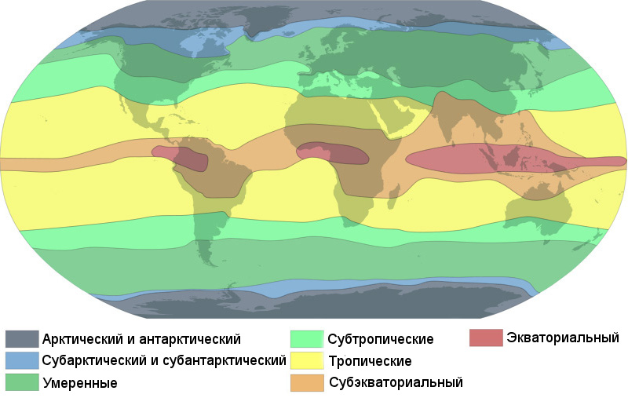
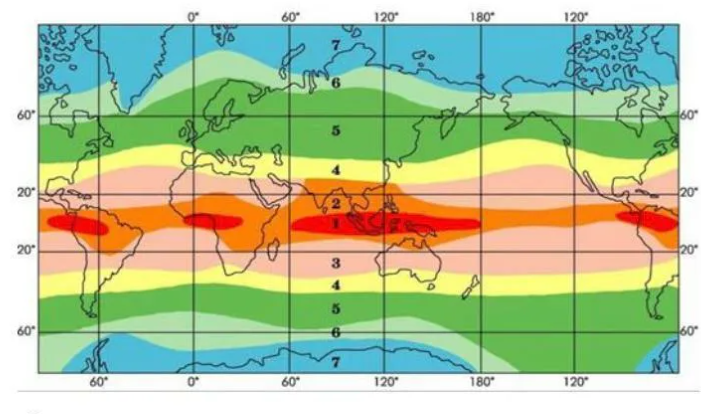

Жер шарының ендік бағытта созылып жатқан біртекті климат аймақтары
Климаттық белдеулер — Жер шарының ендік немесе субендік бағытта тұтаса немесе бөлініп созылып жатқан, климатқа қатысы жағынан айтарлықтай біртекті өңірлері.

Климаттық белдеулер:
Әрбір климаттық белдем құрамында бірнеше климаттық облыстар оқшаулануы мүмкін. Таулы өңірлердің биіктік белдеулерінің өзіне тән климаттық жағдайлары да дербес климаттық белдем ретінде ерекшеленеді.

Негізгі климаттық белдеулер — 4 ауа массасының орналасуына сәйкес келеді. Экваторлық белдеуде жыл бойы төмен қысым, жоғары температура және мол жауын-шашын басым. Тропикалық белдеуде жоғары қысым, құрғақ ауа массалары және төмендеген ауа қозғалыстары тән.
Жер бетіндегі климат тек географиялық ендікке ғана байланысты емес. Оған бірнеше маңызды табиғи факторлар әсер етеді. Бұл факторлар бір-бірімен өзара байланысып, әр өңірдің өзіндік климаттық жағдайын қалыптастырады.
Осылардың барлығы бірге өңірлер арасындағы климаттық айырмашылықтың неге соншалық көп екенін түсіндіреді. Сондықтан климатты түсіну — тек картаға қарау емес, үлкен табиғи механизмдерді зерттеу.